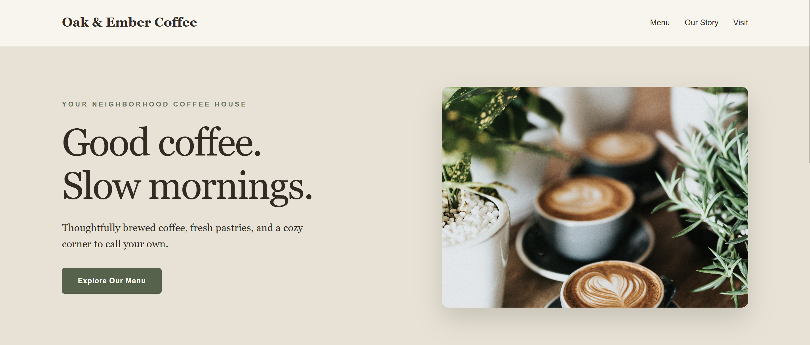
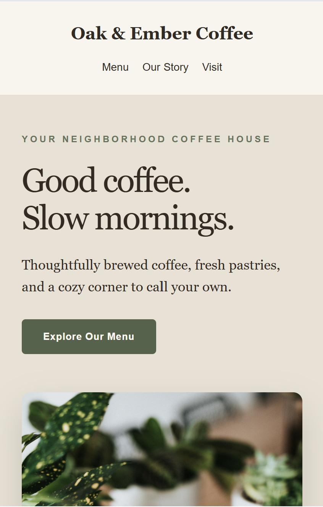

Selected Project · 01
A Warm Welcome
to Oak & Ember
A concept website for a neighborhood coffee shop, designed around warm colors, clear typography, and a welcoming browsing experience.


Project Overview
This self-initiated concept project explores how a small café can present its menu, story, and visitor information in a simple, inviting way.
Highlights
- Responsive desktop and mobile layouts
- Warm, understated visual design
- Menu, about, and visit sections
- Built with HTML and CSS